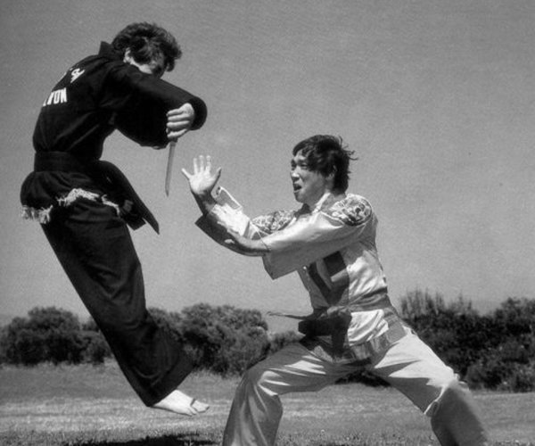
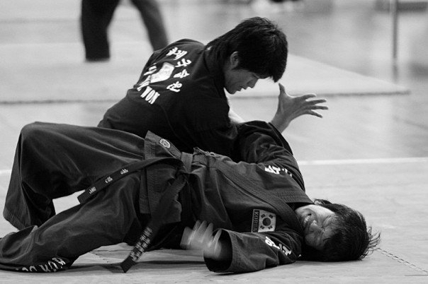
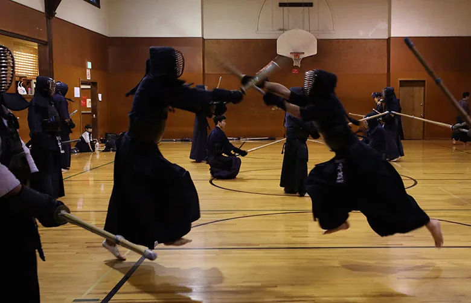
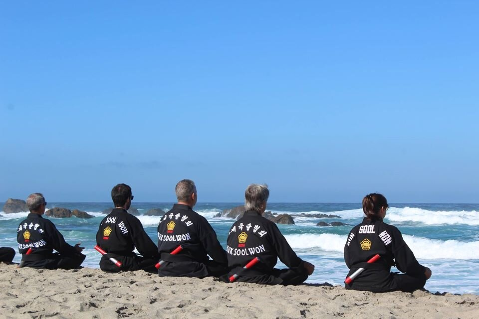

Welcome to the beginnings of a project. I invite you to follow the prompts below, if you wish. Below this screen you will see a black notebook. This is a field book of sorts, an incomplete collection of thoughts that have emerged in this process. They are not coherent, but they are all important. If you wish to flip through without listening, go ahead, otherwise, the two can be gone through together.
First, you will hear a brief series of thoughts about martial arts. There is movement captured in this audio that may be jarring, but it is meant to be ignored. Close your eyes and the audio will begin.
In martial arts, there is the practice of the voice, often heard in martial arts movies. Please turn to page 9, then close your eyes.
Respect. Authority, practice, hierarchy. Close your eyes.

Martial arts are meditative. Turn to page 1. In the spirit of many guided meditations, please now close your eyes…
Spirituality is intrinsic to martial arts. Turn to page 11, close your eyes. Perhaps imagine the sense of peace.
An inside joke among martial artists, leading to an insight. Turn to page 13, 8, 5. Close your eyes, if you’d like.
One difference between power and mastery is control. Turn to page 10. You know what comes next.
